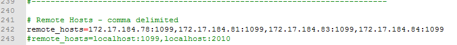

（四）新节点部署------node节点
Node节点部署：
a. 新建普通节点文件夹 : canonchain_witness
b. copy canonchain.exe,canonchain.pdb 到上述文件夹
c. 在canonchain_witness目录下 新建node.bat文件 文件内容如下：
D:\canonchain_witness\canonchain.exe --daemon --rpc --rpc_control --data_path=D:\canonchain_witness\node
pause
d. 点击node.bat 运行节点 在节点目录（如node）下生成config.json文件等等文件后停止运行节点（ctrl c） 删除后缀为*db的目录或文件
e. 配置config.json文件：
log_console 改为true
h. 在canonchain_witness同级目录下，新建dropdb.bat文件，内容如下（删除canonchain_witness\node目录下的所有db文件或目录）：
del /s /q D:\canonchain_witness\node\blockdb && del /s /q D:\canonchain_witness\node\keydb
del /s /q D:\canonchain_witness\node\p2pdb && del /s /q D:\canonchain_witness\node\walletdb
i. 在 同一个局域网 上的Controller的服务器上,把Slaver对应的 内网地址 添加到Controller的jemter安装路径下的jmeter.property文件中
这里的Controller与Slaver是jemter压测的概念
如： 由 北京 的39.105.67.44这台服务器来控制远程机子（如现在在 北京 39.105.135.34这台机子上） 那么39.105.67.44这台机子为Controller 39.105.135.34这台机子为Slaver
如： jmeter.property的文件路径：D:\Java\jmeter\bin\jmeter.property
在 北京 39.105.67.44(Controller) 这台服务器上打开jmeter.property
把 北京 39.105.135.34(Slaver) 的内网地址 172.17.184.81添加到jmeter.property中remote_hosts后面，端口号统一使用1099
